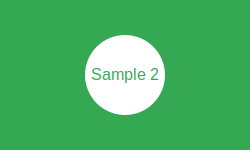

Демонстрація карт зображень (MAP)
Що таке карта зображення?
Карта зображення дозволяє створювати кліковані області на зображенні. Кожна область може мати своє посилання.
Основні елементи:
- <img usemap="#name">
- Зображення з посиланням на карту
- <map name="name">
- Контейнер для областей карти
- <area>
- Визначає кліковану область
Типи форм областей:
- rect - прямокутна область (coords="x1,y1,x2,y2")
- circle - кругла область (coords="x,y,radius")
- poly - багатокутна область (coords="x1,y1,x2,y2,x3,y3...")
Приклад круглої області:
Клікніть на білий круг на зображенні вище
Переваги карт зображень:
- Інтерактивність зображень
- Зручна навігація
- Семантична доступність
- Підтримка різних форм областей